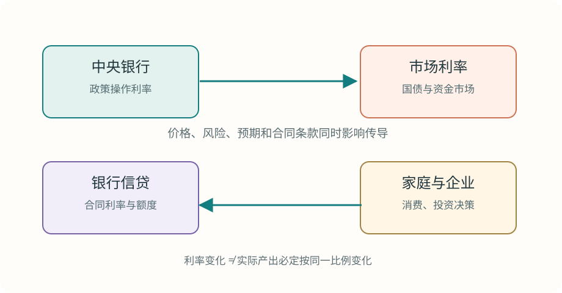
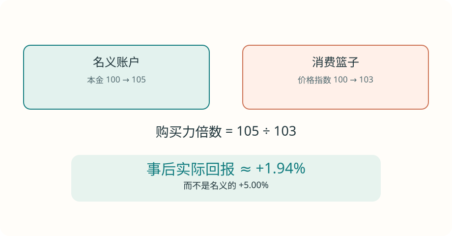
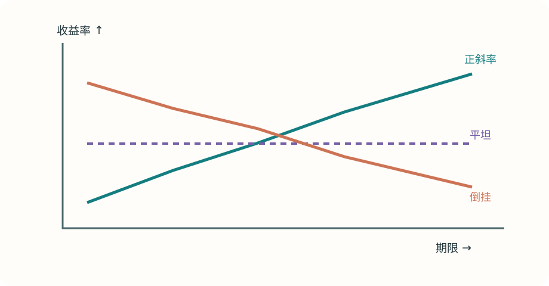

利率与金融体系
同样是 5% 的利率，为什么借款人面对的真实成本会不同？从购买力、期限结构与金融传导重新理解利率。
利率不是一个数字，而是一组跨时间的价格
把今天的 100 元借给别人，明年收回 105 元：你获得了 5% 的名义回报。但如果一年后整个消费篮子也涨价，增加的 5 元不一定代表实际购买力提高。相同面额的贷款还可能有不同到期日、信用风险、提前还款权与抵押条件。因此在分析宏观金融时，先明确期限、币种、风险、税收、计息口径与通胀基准，再比较利率高低。

费雪关系：名义回报如何转换成购买力
如果一年前价格指数为 100、现在为 103，名义账户从 100 增至 105，那么最终购买力的相对倍数是 105/103≈1.019417，事后实际回报约 1.94%，而不是将 5% − 3% 直接作为精确值。

预先决策时，借贷双方关心的是预期通胀，常把 i≈rᵉ+πᵉ 作为小利率近似。但真正的债券或贷款还涉及风险溢价、流动性溢价、期限和税收；因此市场名义利率减去某个通胀预期指标，不必然等于无风险的纯实际利率。
名义利率与实际购买力换算
保持期限一致；示例仅计算事后实际回报，不推断未来通胀。
收益率曲线：为什么长期利率未必更高
收益率曲线在某一观察日比较信用条件尽可能相近的不同期限债券收益率。正常向上倾斜的曲线可能反映未来短期利率预期、期限溢价及其他市场需求；若较长期收益率低于短期收益率，则称为倒挂。倒挂是需要进一步分析的信号，不是衰退的充分条件。

例如美国 10 年与 3 个月国债收益率差常被研究为经济景气的领先指标，但美国联储研究指出不同利差在不同样本和预测期限下表现不一；克利夫兰联储的资料也记录了假阳性。应同时观察期限溢价、信贷环境、就业与实体数据。联储研究讨论这一预测边界。
模拟期限利差和收益率曲线
将短端收益率、长期斜率分开调节。图中曲线均为构造数据。
政策利率如何影响企业和家庭
政策利率变动影响银行融资和市场资金价格，随后经由存贷款利率、债券估值、汇率、抵押品价值及预期改变消费和投资。不同家庭企业面对的融资条件不一致，政策传导速度也不固定；比如长期固定利率借款人不会立刻按新的短期利率重定价。
| 传导环节 | 短期观察量 | 注意边界 |
|---|---|---|
| 政策操作 | 目标区间、管理利率、公开市场操作 | 操作框架依央行制度而异 |
| 市场利率 | 隔夜利率、收益率曲线、信用利差 | 长端并非机械跟随短端 |
| 企业与家庭 | 贷款利率、还款负担、可获额度 | 信用风险、合同重定价有差异 |
| 最终经济 | 投资、消费、就业与物价 | 供给约束和预期反应同时存在 |
LPR 是贷款定价参考，而非一笔贷款的承诺报价
中国自 2019 年 8 月改革完善贷款市场报价利率（LPR）形成机制。全国银行间同业拆借中心根据报价行报价计算发布 LPR，通常关注 1 年期和 5 年期以上品种。它为贷款定价提供参考，但特定客户的合同利率可能结合期限、信用风险、浮动规则等另行加减点。
观察任何一日的 LPR，务必记录具体公告日期和品种；不要把 2023 或 2024 年的历史利率数字当成今天仍然适用的政策值。官方发布与历史记录见 中国货币网 LPR。
来源与证据
机构资料用于核对概念、统计方法与制度；本篇图表和实验数字均为明确标注的构造示例，不代表当前市场实际数据。
- 美国联储：收益率曲线不具备无条件完美预测能力 · 不同曲线利差与样本
- 克利夫兰联储：收益率曲线与衰退预测误报 · false positives
- 中国货币网：LPR 形成机制 · 2019 机制公告与报价数据
- 美联储：政策工具和传导 · 目标利率、传导